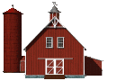

Smithsburg is located at 39°39′17″N 77°34′25″W (39.654846, -77.573643).

According to the United States Census Bureau, the town has a total area of 1.06 square miles (2.75 km2), of which 1.05 square miles (2.72 km2) is land and 0.01 square miles (0.03 km2) is water. The only body of water that is within the limits of Smithsburg is the now inactive Smithsburg reservoir.
Smithsburg is characterized by rolling hills and open space. The town is well known for its farming community, including apple orchards and dairy farms.